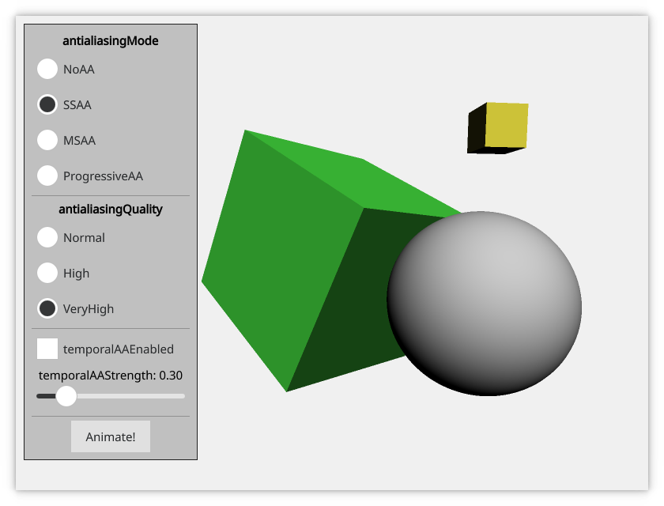

Qt Quick 3D - Antialiasing Example
Demonstrates the antialiasing modes in Qt Quick 3D.

The Antialiasing example demonstrates how to control antialiasing in Qt Quick 3D. It shows a simple scene that exhibits antialiasing artifacts. There is a simple Qt Quick user interface that allows choosing between the antialiasing types, and setting the options that control them.
The test scene
This example shows a simple scene that contains a sphere and two rotated cubes. The scene is set up so that it clearly shows jagged edges when antialiasing is not enabled.
Controlling antialiasing
Antialiasing is controlled by the SceneEnvironment object. The values are set based on the selection made in the user interface.
The {SceneEnvironment.antialiasingMode}{antialiasing mode} can be set to NoAA to disable antialiasing, or to one of the following:
SSAAfor supersample antialiasingMSAAfor multisample antialiasingProgressiveAAfor progressive antialiasing
The {SceneEnvironment.antialiasingQuality}{antialiasing quality} can be set to Medium, High, or VeryHigh.
In addition, {SceneEnvironment.temporalAAEnabled}{temporal antialiasing} can be enabled independently.
environment: SceneEnvironment {
id: sceneEnvironment
clearColor: "#f0f0f0"
backgroundMode: SceneEnvironment.Color
antialiasingMode: modeButton1.checked ? SceneEnvironment.NoAA : modeButton2.checked
? SceneEnvironment.SSAA : modeButton3.checked
? SceneEnvironment.MSAA : SceneEnvironment.ProgressiveAA
antialiasingQuality: qualityButton1.checked ? SceneEnvironment.Medium : qualityButton2.checked
? SceneEnvironment.High : SceneEnvironment.VeryHigh
temporalAAEnabled: temporalModeButton.checked
temporalAAStrength: temporalStrengthSlider.value
}
Files: